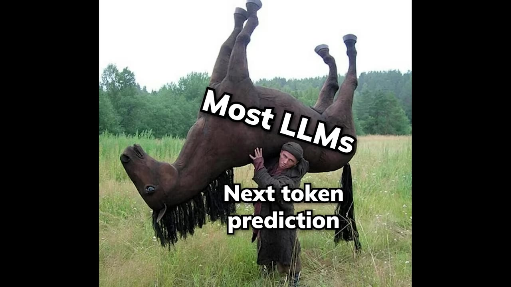
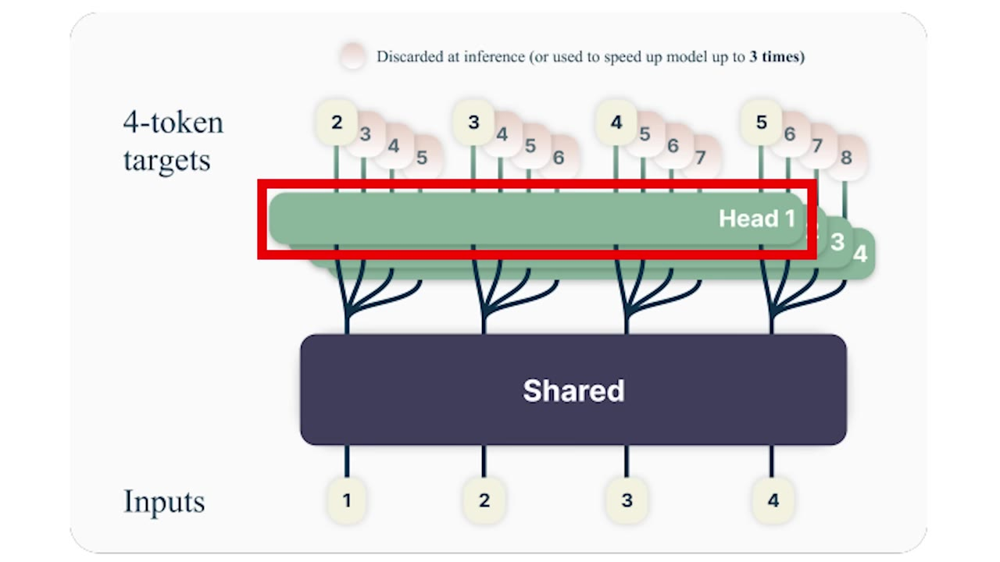
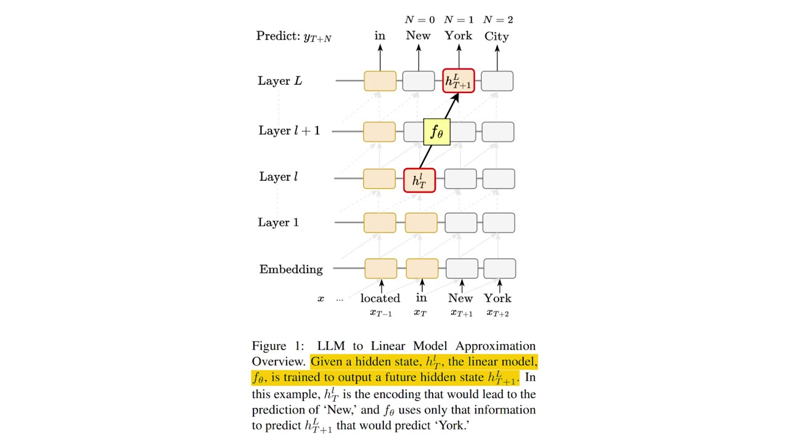
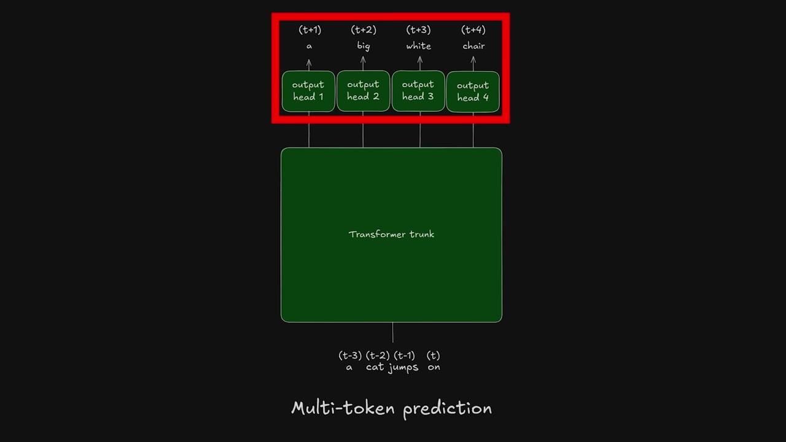
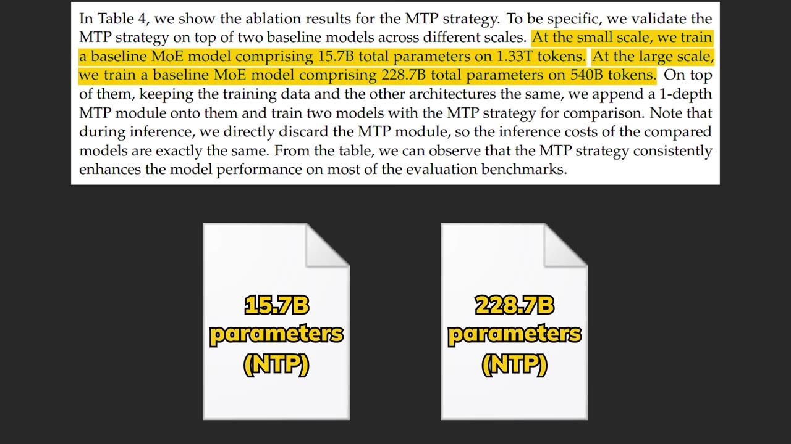

A non-reasoning model can't tell you how many words its next sentence will have — because predicting one token at a time, left to right, makes it bad at seeing its own future. Multi-token prediction asks the model to call the next few tokens at once. It sounds like it should make things worse; it mostly makes them better, and it's most of why DeepSeek V3 trains the way it does.
Watch on YouTubeAsk a non-reasoning model how many words its next sentence will have and it'll usually miss — not because it can't count, but because predicting one token at a time, left to right, makes it bad at anticipating its own output. That's the core weakness of the next-token paradigm. There are alternatives — diffusion language models fill a whole window at once, so every token gets a say, not just the ones already on the left; BERT attends in both directions — but both are big architectural leaps, and next-token prediction is already so well engineered they struggle to catch up. So here's the cheaper question: what if you just predict the next two, three, or four tokens at once?

MTP is what it sounds like: instead of only predicting token t+1 from the context up to t, also predict t+2, t+3, and t+4 simultaneously. The first version (proposed about a year ago) is architecturally boring in a good way — a standard transformer "trunk" processes the input into one hidden state, and instead of a single output head you add several independent heads, each predicting a future position in parallel off that same shared state.

Predicting four tokens blind sounds like it should make everything sloppier, and naively it does — the research says quality degrades badly. bycloud's framing: it's four weather forecasters each predicting a different day with no communication. But train them together and it's more like they all went through the same school, so their predictions don't drift far apart.
It's not a fluke. Researchers found that a single hidden state at position T already carries enough to approximate the t+2 token at about 48% accuracy. So even a model trained only on next-token prediction is implicitly building some foresight — MTP just makes it explicit and rewards it. That also explains why bigger models gain more from MTP: they have the internal room to build the foresight it promotes.

Even if a model is only trained to predict the next token, their internal hidden states would still implicitly force the model to develop some level of foresight.— bycloud
So why haven't the big labs shipped it? They have — the current best open-source model, DeepSeek V3, just buried it under everything else it does. Its insight is to flip MTP from an inference-time prediction trick into a training objective, then drop it at inference (the deployed model does plain next-token prediction). And instead of the inconsistent parallel heads, it uses sequential MTP modules so information flows from the t+1 prediction into the t+2 one — one extra transformer block per extra token, reusing the main model's output head.

The key is that the gradients from the MTP modules don't just train the extra blocks; they flow back through the shared trunk and output head, forcing the core model to learn richer, longer-range representations.
DeepSeek validated it carefully: 15.7B and 228.7B-parameter models, baseline next-token training versus the same models trained with one MTP objective (then discarded). The MTP-trained versions won almost across the board, with barely any added compute.

The cherry on top: keep that one MTP module around at inference and use it for speculative decoding — predicting two tokens at once — and you get a 1.8x tokens-per-second speedup, with the second token accepted 85–90% of the time. It takes the best of multi-token prediction while sidestepping the parallel-head pitfalls.